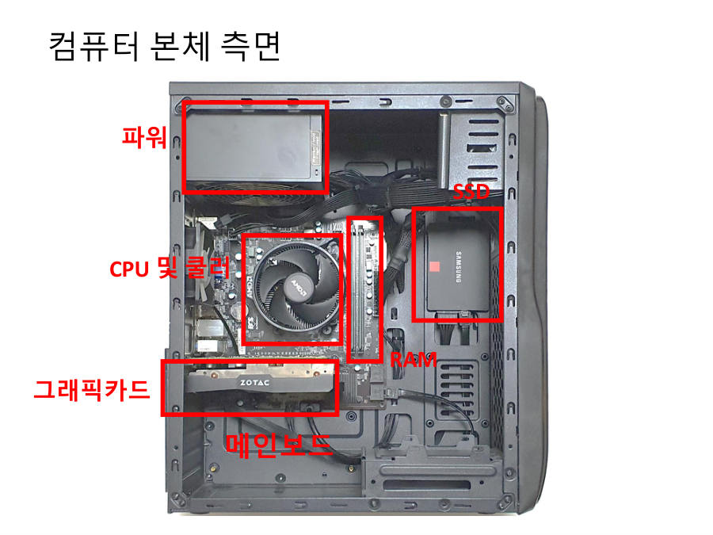

컴퓨터의 6대 부품과 역할 ★★★
컴퓨터 본체를 열면 부품이 여러 개 보이지만, 시험에 나오는 핵심은 6가지예요. 교수님은 실제 본체를 들고 와서 보여 줬고, 조립 사진 자료도 나눠 줬어요. 아래 사진에서 위치를 먼저 눈에 익혀 두세요.

| 부품 | 하는 일 (시험 표현) | 쉬운 비유와 눈으로 찾는 법 |
|---|---|---|
| CPU 중앙처리장치 | 컴퓨터의 거의 대부분의 계산을 담당해요 | 두뇌. 위에 큰 팬(쿨러)이 달린 네모난 칩 |
| RAM 주기억장치 | 휘발성 기억장치. 수행 중인 프로그램 코드와 데이터를 보관해요 | 책상 위. CPU 옆에 꽂힌 길쭉한 막대 |
| 보조기억장치 SSD / HDD | 비휘발성 기억장치. 전원이 꺼져도 데이터를 반영구 보관해요 | 도서관·창고. 네모난 상자 또는 작은 판(M.2) |
| GPU 그래픽카드 | 이미지 처리, 딥러닝 학습 같은 행렬 기반 연산을 병렬로 빠르게 수행해요 | 단순 계산을 한꺼번에 처리하는 조수 부대. 본체 아래쪽에 꽂힌 큰 카드 |
| 메인보드 마더보드 | 부품들을 꽂아 연결하고, 부품 간에 데이터가 전송되는 통로 기능을 해요 | 도로망이 깔린 땅. 모든 부품이 꽂히는 큰 판 |
| 전원공급장치 파워 | 교류 전류를 직류 전류로 바꿔 컴퓨터에 전원을 공급해요 | 변압기·발전소. 본체 위쪽 상자에서 선이 뻗어 나와요 |
GPU는 원래 게임처럼 화려한 그래픽을 위한 부품이었어요. 지금은 AI 계산에 많이 쓰여서 "그래픽 처리 유닛이 아니라 AI 처리 유닛이 되어 간다"고 교수님이 말했어요. GPU가 쓰는 메모리를 따로 VRAM이라고 불러요.
CPU는 어려운 문제를 하나씩 척척 푸는 수학 천재 한 명이에요. GPU는 쉬운 계산을 수천 명이 한꺼번에 푸는 부대예요. 사진이나 딥러닝처럼 같은 계산을 엄청나게 많이 반복하는 일은 부대가 훨씬 빨라요.
부품 말고도 쿨러(CPU의 열을 식히는 팬)와 케이스(껍데기)가 있어요. 키보드·마우스·모니터는 본체 밖의 입출력장치예요. 6대 부품에는 들어가지 않아요.
사진 문제 푸는 법이에요. 2023 기출 2.1번은 본체 사진에 빈칸 6개를 두고 부품 번호를 쓰게 했어요. 위치로 찾으면 돼요. 위쪽 상자는 파워, 둥근 팬이 달린 곳은 CPU, 그 옆 얇은 막대는 RAM, 아래의 큰 카드는 그래픽카드, 오른쪽 상자는 SSD, 판 전체는 메인보드예요.
보기: 1 보조기억장치, 2 그래픽카드(GPU), 3 전원공급장치, 4 CPU, 5 RAM, 6 메인보드
| 설명 | 정답 번호 |
|---|---|
| a. 컴퓨터 부품 간에 데이터가 전송되는 통로의 기능을 수행한다 | 6 메인보드 |
| b. 컴퓨터의 거의 대부분의 계산을 담당하여 수행한다 | 4 CPU |
| c. 비휘발성 기억장치이며, 전원이 꺼지더라도 데이터를 반영구 보관한다 | 1 보조기억장치 |
| d. 휘발성 기억장치이며, 수행 중인 프로그램 코드와 데이터를 보관한다 | 5 RAM |
| e. 이미지 처리, 딥러닝 학습과 같은 행렬 기반의 연산을 병렬 연산으로 빠르게 수행한다 | 2 GPU |
| f. 교류 전류를 직류 전류로 변환하여 컴퓨터에 전원을 공급한다 | 3 전원공급장치 |
사진 2.1번 정답은 왼쪽 위에서부터 3(파워), 6(메인보드), 4(CPU), 2(GPU), 오른쪽의 1(SSD), 5(RAM)예요.
잠깐 확인 — "교류를 직류로 바꿔 전원을 공급한다"는 어느 부품일까요?
전원공급장치(파워)예요. 콘센트의 교류 전기를 컴퓨터 부품이 쓰는 직류로 바꿔 줘요.
자료: 2·6·7주차 · 02컴퓨터구조소개.pdf · 02컴퓨터구조소개-실습.pdf · 05중앙처리장치.pdf · 06메모리와계층구조.pdf · 빅데이터플02·06·07